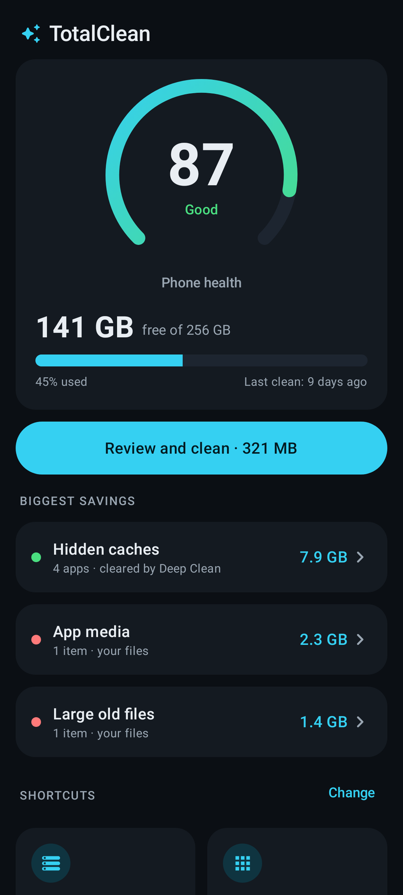
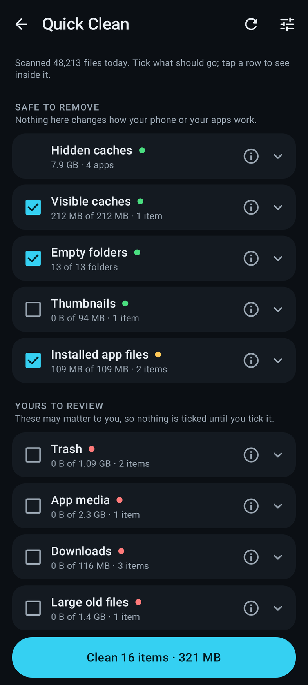
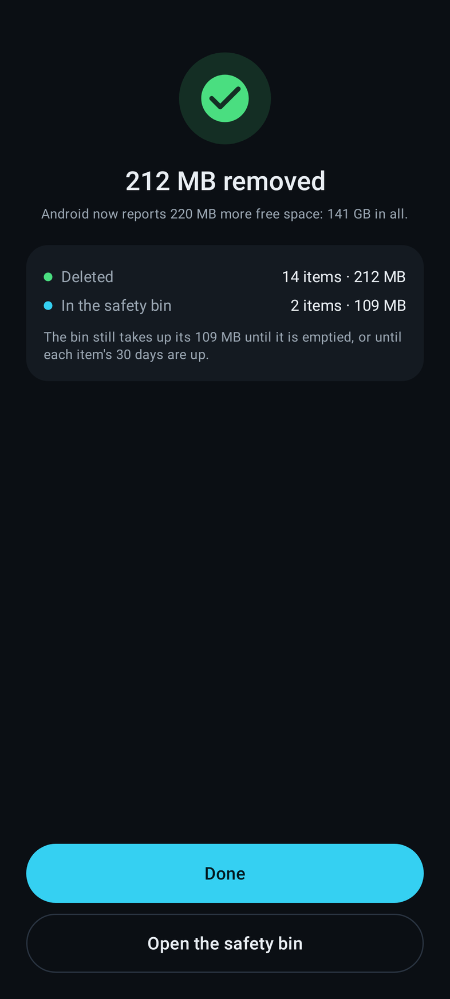
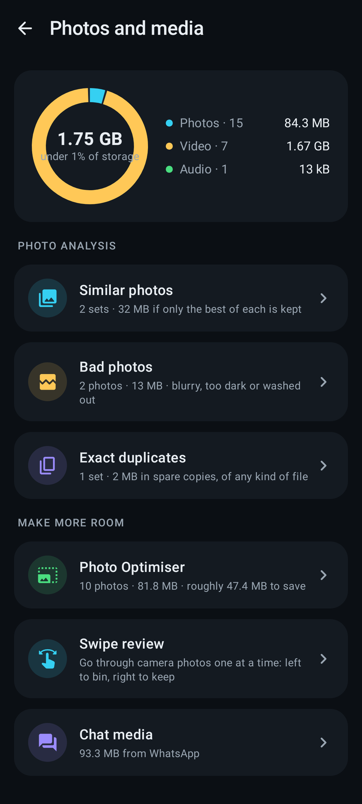
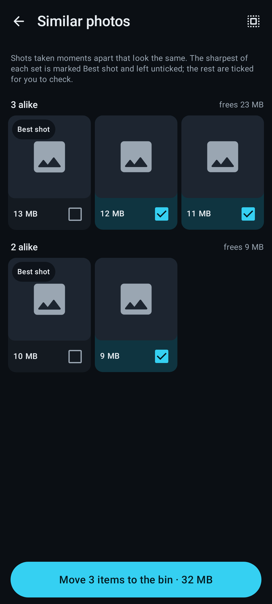
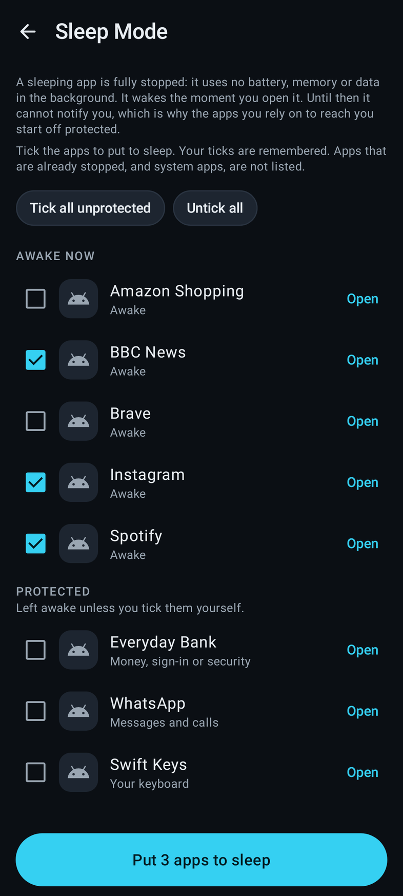
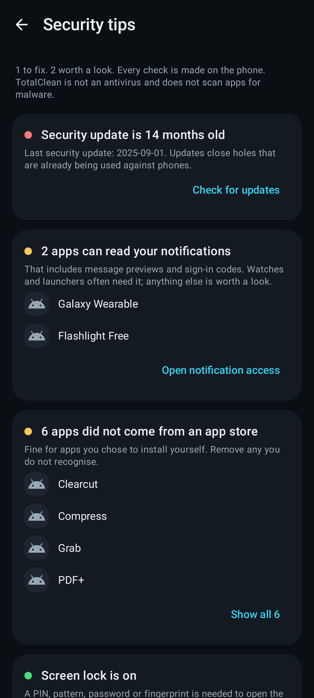
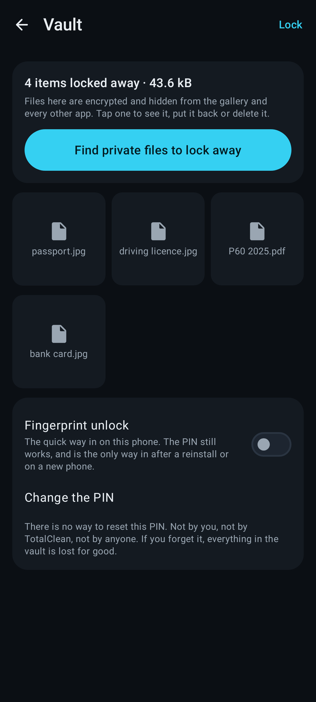

Free up your phone. See exactly what went.
TotalClean is a phone cleaner for Android that tells the truth about space. Every figure is measured after the clean, not guessed before it.
Junk is ticked for you; your own files never are. Anything of yours that is removed waits 30 days in a safety bin, and nothing about you or your phone is collected.
Download for AndroidHow to install
- Version 1.0.1
- Android 11 or later
- 23.5 MB
Free, with nothing to unlock. No adverts, no account with the developer, no tracking. Compare or read the release notes.
Chrome may say the file might be harmful. It shows this for app files that do not come from Google Play. Choose Download anyway.

- No subscriptionEvery feature is in the free app.
- No advertsNo upsells and no reminders to open it.
- A safety binYour own files wait 30 days.
- Real numbersMeasured after the clean.
A look inside
These are the real screens, drawn from the app's own code with made-up files. Swipe or scroll sideways to see them all.







How it works
There is nothing to buy and no account to make. TotalClean looks at the storage on your phone and shows what can go.
Scan
Quick Clean finds caches, empty folders, spare install files, leftovers from removed apps and more.
Choose
Junk is ticked for you. Your own photos, videos and files are only removed if you tick them.
Clean
TotalClean removes what you chose and measures how much space really came back.
Everything is in, and all of it is free
Nothing below is held back for a paid tier, because there is no paid tier.
Cleaning
- Quick Clean
- Caches, advert caches, empty folders, spare install files and leftovers from removed apps.
- Deep Clean
- Clears every app's hidden cache in one go, then measures how much really went.
- Safety bin
- Anything of yours that is removed waits 30 days and goes back with one tap.
- Automatic cleaning and rules
- Off until you switch it on. Junk only, overnight, plus rules such as screenshots older than 30 days.
Photos and media
- Similar shots
- The sharpest picked out, with blurred, dark and duplicate photos found for you.
- Swipe review and Photo Optimiser
- Keep or remove with a swipe, and shrink photos you want to keep.
- Chat media
- Clear chat pictures, videos and voice notes by type.
Space
- Google Drive
- Move files to a tidy folder in your own Drive. Each is checked against its Drive copy before it is offered for removal.
- Storage forecast
- How fast storage is filling, when it will be full, and which apps are growing.
- Storage map
- Walk through storage folder by folder.
Phone
- Sleep Mode
- Stops the apps you choose. Messaging, alarm, banking, health and security apps start off protected.
- Vault
- Finds photos of passports, bank cards and other papers and locks them away behind a PIN only you know.
- Security tips
- Checks of the phone's own settings, each with a button to the fix.
- Widget and quick tile
- Free space on the home screen and a one-tap clean.
Your phone is your business
No servers
TotalClean has no accounts and no servers. The developer receives nothing.
Your own Drive
Files go to Google Drive only if you connect it, and only to your own Drive.
No ads, no tracking
There is no advertising, analytics or tracking, in the app or on this site.
Installing and updating
TotalClean is not on Google Play, so your phone asks a couple of extra questions the first time.
Download the app file
Tap Download on your phone. The file is called TotalClean.apk and is about 23.5 MB. If Chrome says the file might be harmful, choose Download anyway.
Allow the install
Open the file. The first time, Android asks you to allow your browser to install apps. Allow it, go back and tap Install. If Google Play Protect steps in, choose More details, then Install anyway.
Updating later
TotalClean tells you when a newer version is out. Install the new file over the old one and everything you have saved is kept.
Version 1.0.1, released 17 November 2026. See the release notes, or check your download.
Questions
Is TotalClean really free?
Yes. There is no paid version, no subscription and no adverts. See the comparison.
Will it delete my photos?
Only if you tick them, or set a rule that covers them. Your own files go to the safety bin for 30 days and come back with one tap.
Is there a memory booster?
No. Emptying memory by hand slows a modern phone down, so TotalClean does not offer it.
Does it scan for viruses?
No. Security tips check the phone's own settings. They do not scan apps for malware.
Why does it ask for so much access?
A cleaner needs wide access to storage to find and remove files. Usage access measures each app's size and cache. None of it leaves the phone.
What is the helper?
Deep Clean, Sleep Mode and Browser Cleaner use a helper in Accessibility settings. The app shows how to switch it on. On Android 17 it cannot run while Advanced Protection is on.
What if I forget my vault PIN?
Nobody can open the vault without it, including the maker of the app. A forgotten PIN means the files in the vault cannot be got back.
How do I update TotalClean?
The app tells you when a new version is out. Download it from this site and install it over the old one; your settings and bin stay.
A cleaner that shows its working
Free, with no adverts and nothing to unlock. Made by the developer of several other free Android apps: see them all.